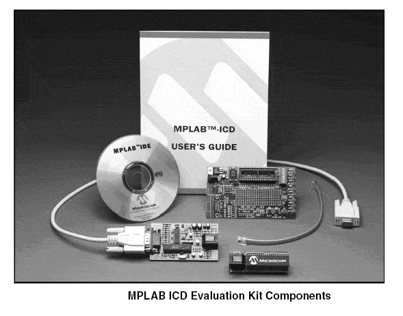
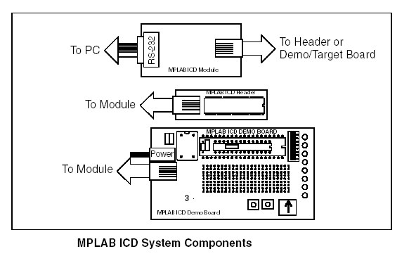
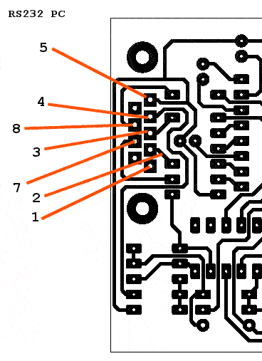
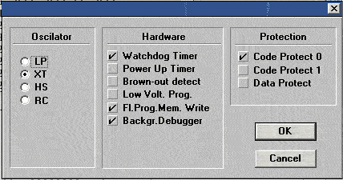
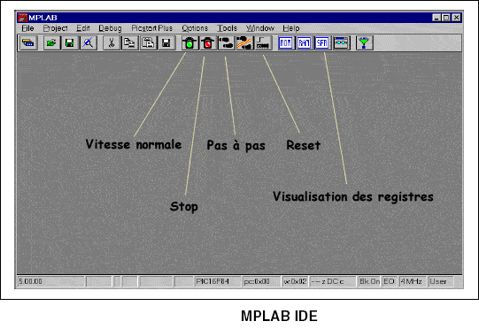
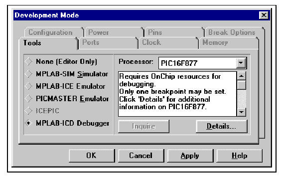
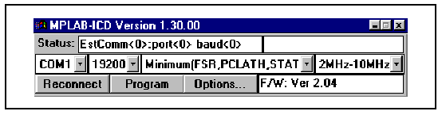
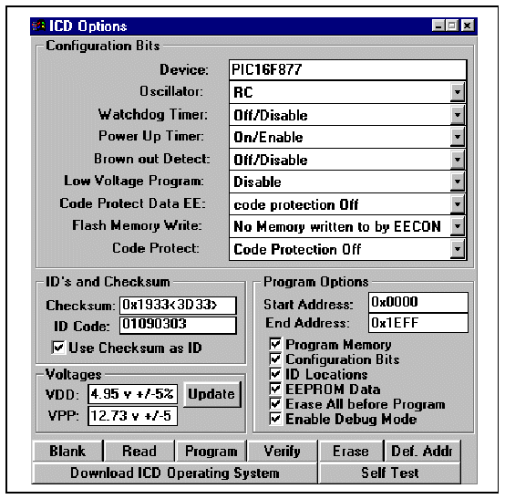

REALISER UN CLONE DE L'EMULATEUR MPLAB ICD DE MICROCHIP

MPLAB ICD est un kit d'évaluation développé par la société MICROCHIP bien connue pour ses microcontrôleurs PIC. Ce kit utilise les ressources de débogage des PIC de la famille PIC16F87X (ICSP - In-Circuit Serial Programming et In-Circuit Debugging). Il comprend un module de débogage connecté au PC par la liaison RS232 (câbles fournis), le circuit de tête (Header) équipé d'un 16F877, une carte de démonstration, le logiciel pour PC MPLAB IDE et toute la documentation nécessaire. C'est un excellent outil mais son prix est tout de même élevé, de l'ordre de 276 € en France.
Heureusement, il est possible de réaliser un clone grâce à l'initiative de MICROCHIP qui met à la disposition des utilisateurs le logiciel en téléchargement.MPALB IDE (http://www.microchip.com). Une bonne raison donc pour débuter avec les µC PIC16F87X.
MPLAB ICD, qui est une fonction offerte par MPLAB IDE, permet avec un module externe connecté au port série d'un PC et en implantant un PIC16F87X sur votre montage de programmer ce µC, d'exécuter son programme en mode pas à pas ou de l'exécuter jusqu'aux points d'arrêt que vous aurez placé tout en visionnant l'état des registres et le déroulement du fichier source.
Comment faire pour le faire?
LE MONTAGE

Le module principal de MPLAB ICD est connecté au PC par sa liaison RS232 et au µC implanté sur votre montage (Header) par un cordon 6 conducteurs. Le kit de Microchip comprend également la carte de démonstration qui sera remplacée par votre application si vous réalisez vous même le MPLAB ICD. Le fichier MPLAB_ICD.pdf (180Ko) comprend le schéma et le dessin du circuit imprimé du module principal (je remercie Patrick Touzet pour la réalisation du typon - vous trouverez également sur son site une plaque d'essais - MPLABICD DémoBoard - http://membres.lycos.fr/silicium31/Electronique/PIC/free_icd.htm,). Pour réaliser le Header pour un µC de 40 pins (16F877) ou 28 pins (16F876) télécharger MPLABICD_Header.pdf. Si votre montage est monté sur une plaque d'essais vous pouvez vous passer du Header et connecter directement les 6 fils (ou 5 sans le +5V) du connecteur J3 au montage (je ne branche pas RB3 voir remarque plus loin). Le coeur du montage est un PIC17F876. Il gère tout, le dialogue avec le PC à travers l'interface MAX232, la programmation et le débugage du PIC16F87X, génère la tension de programmation par RC2 (partie du schéma autour de U3, L1, Q5,Q3 ...) et mesure les tensions du module.
Après avoir réalisé les circuits imprimés (côté encre contre le CImp), programmer le PIC16F876 du module avec le programme MPL876.HEX (voir LE LOGICIEL). Pour cela, il faut posséder un programmateur de PIC bien sur.
Avant de monter le PIC,vérifier la continuité des pistes et les éventuels court-circuits. Souder les 8 straps, les composant passifs, les régulateurs de tension U3 et U4,les transistors, les circuits intégrés et les connecteurs. Le strap JP1 permet d'alimenter le module avec le +5V du montage (via Header). Si vous ne l'alimentez que de cette manière, vous pouvez vous passez du régulateur U4, CR6, C11, C13 et connecteur J5. Mais compte-tenu du surcoût modéré pourquoi s'en passer !
Les prises RJ12 (6P/6C) sont câblées croisées ou plutôt à plat, c'est à dire que si le câble est posé à plat, les prises RJ12 aux extrémités sont dans le même sens. Il est possible de sertir le câble sans avoir recours à l'outil à sertir (surtout pour deux prises). Ce câble ne doit pas excéder 20 cm, mais c'est largement suffisant.
Si le câble RS232 est un modèle du commerce, vérifier bien qu'il est correctement câblé (avec RTS, CTS, Rxd, Txd, masse et DTR). La plupart des dysfonctionnements proviennent d'une erreur de câblage de ce câble. Alors n'hésitez pas à prendre le fer à souder et à le modifier si besoin suivant le modèle ci dessous à partir de la prise sur le PC:

Le câble que j'utilise (commerce modifié) a les pts 1 et 6 connectés dans les prises et reliés entre eux au point 4 de la prise opposée.
Vous vous apercevrez donc que 3 lignes de port du PIC 16F87X de votre Header et donc également de votre montage sont dédiées au MPLAB ICD. Il s'agit de RB3, RB6 et RB7, comme me le faisait remarqué Patrick Touzet, la ligne RB3 n'est pas nécessaire au module MPLAB_ICD (Low Voltage Programming non utilisé) Vous pouvez donc utiliser cette ligne pour votre application. Attention, la tension de programmation Vpp est connectée à la ligne 1 (MCLR/VPP) du PIC et RB6 et RB7 ne sont pas disponibles car utilisées par le mode ICSP. Problématique ? Pas vraiment, il est toujours possible d'utiliser ces lignes de port pour commander une LED ou lire un bouton poussoir, ce qui ne pose généralement pas de problème. Une fois le montage et le programme débugé, vous pourrez remplacer le PIC16F87X par un PIC16CXX.
Une fois toutes les vérifications d'usage effectuées, mettez le montage sous tension ( environ 9V CC), la LED doit clignoter. Si ce n'est pas le cas, votre LED est soit soudée à l'envers soit hors service. Essayez la en série avec une résistance de 330 Ohm sous 5V sur votre plaque d'essais, elle doit bien entendu s'allumer, la tension à ses bornes doit être de l'ordre de 1,9V (voir remarque paragraphe suivant). Si elle ne clignote toujours pas une fois branchée sur le module, alors vous pouvez incriminer le PIC16F876. Il est soit détruit (court-circuit, matériel de récupération...), soit mal programmé, ou encore n'oscille pas. Prenons les problème à l'envers, si vous disposez d'un oscillo ou d'un fréquencemètre équipé d'une sonde et que vous êtes certain du bon état du PIC, vous devez observer sur OSC1 un signal à 3.6864 MHz. Si vous ne l'observez pas, vérifiez la valeurs des capacités et en désespoir de cause changez de quartz. Essayez ensuite de reprogrammer le PIC. Voici la configuration de votre programmateur après lui avoir chargé le fichier programme MPL876.HEX:

Sans sélectionner le watchdog, le programme ne tournera pas. XT est le type d'oscillateur utilisé. La protection Code protect 0 n'est pas une obligatoire.
LE LOGICIEL
Télécharger MPLAB IDE sur le site. MPLAB IDE intègre un assembleur PIC (pratiquement toute la gamme), un simulateur de PIC et l'interface de débogage qui nous intéresse.

Il permet également de compiler un programme source en langage C (compilateur C non intégré) et de les simuler également en mode pas à pas tout en visionnant le contenu des registres et des variables. Après l'avoir installé, vous trouverez un fichier (MPL876.HEX) qui est en fait le programme à programmer dans le µC PIC16F876 au coeur de MPLAB ICD.
Dans un premier temps familiarisez avec MPLAB IDE et testez des petits programmes assembleur ou C à l'aide du simulateur de PIC en créant des projets (voir doc MPLAB IDE).Vous aurez besoin de le faire pour faire fonctionner votre débugeur.
TEST DE VOTRE CLONE D'EMULATEUR MPLAB ICD (OU CELUI DU COMMERCE)
Connecter MPLAB à un port COM du PC, alimentez le, la LED clignote. Pour accéder à la fonction MPLAB ICD ouvrir le menu "options", "dévelopement mode" et sélectionnez "MPLAB ICD debugger".

Après avoir sélectionné le µC, les fenêtres suivantes s'ouvrent

:
A ce stade, tout va bien, votre débugeur MPLAB ICD est connecté au COM1 à 19200 (ou 57600) et reconnu par MPLAB IDE. Cliquez dans "Options". La deuxième fenêtre est pratiquement celle d'un logiciel de programmation de PIC. Il est donc nécessaire de la configurer (Oscillator, Watchdog...) remarque: l'option Low voltage program doit rester Disable, MPLAB ICD ne gérant pas le mode LVP.
Les tensions VDD et VPP sont celles mesurées par le PIC16F876 du MPLAB ICD. Le prototype que j'avais réalisé ne me donnait pas ces valeurs. Après avoir tâtonner pendant plusieurs heures, j'ai constaté que c'est la LED D1, connectée à RA3 (VRef+), qui sert de référence. La tension à mesurer aux bornes de la LED (allumée) doit être de l'ordre de 1,9 V - Après échange de la LED tout est rentré dans l'ordre.
Si après avoir vérifié les soudures, la programmation du PIC16F876 et que la LED clignote la connexion ne s'effectue pas, il est probable que le câble RS232 est mal câblé (voir câblage dans LE MONTAGE) ou que vous soyez sur le mauvais port COM.
Il ne vous reste plus qu'à charger un projet suivant le même principe que le simulateur et de programmer le PIC16F87X de l'application (Header). Vous pouvez ensuite l'exécuter à pleine vitesse, en mode pas à pas ou avec un point d'arrêt. En cas d'erreur de votre source, modifiez le, compilez, programmez et testez la modification. Simple et pratique puisque ce montage va vous donner l'état de vos registres et de vos variables et ainsi, vous révéler le mystère qui entoure un programme qui ne fonctionne pas., Merci Microchip...visitez leur site (pub gratuite), il y a une mine d'informations utiles (http://www.microchip.com)